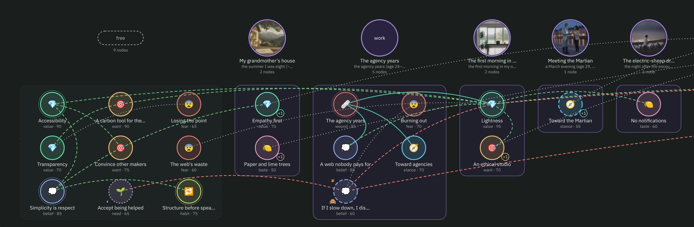

Character Open File
完整的 AI 角色装在一个开放文件中——可携带，并附带其权利。
完整的 AI 角色装在一个开放文件中——可携带，并附带其权利。
一种开放文件格式，把定义一个 AI 角色的一切打包在一起——性格、外貌、声音、3D、动作、智能体技能、记忆和心理——并内置其权利与同意。同一个文件可以在聊天应用、图像生成器、ComfyUI、游戏引擎或智能体中打开。
当前版本：1.2.2，2026年11月15日——Builder保留它未建模的一切内容；cof-cli 支持智能体宿主（一份记忆，两个家）；浏览器显示无日期的记忆（发布说明）。此前：1.2.1，11月8日——Character.AI 导入；1.2，11月8日——心理；1.1，10月30日——记忆；1.0，10月17日。每个 1.x 文件都保持有效，并可由每个 1.x 工具读取。
文件里装得下什么？
COF 与 Character Card V2 和 V3 / .charx、智能体 Markdown、Letta Agent File、MacPaw Portable Memory 及 VRM 的逐项对比——也包括 COF 不做的事。
保存你的 Character.AI 角色
COF 1.2.1：你的角色，以及作为其私密记忆的对话，装在一个开放文件中——然后加上外貌、声音、预设和心理。一切都在你的浏览器中完成。
AI 角色如今有了内心世界
COF 1.2：一个可以阅读、编辑并随身携带的心理——每条信条都关联到形成它的那段记忆。
多少条信条，才构成一个人？
心理学实际统计过的是什么，一个用来检验你自己数字的模拟器，以及 Big Five、Myers-Briggs 类型、Enneagram 和占星术各有几分价值。
AI 角色如今有了记忆
COF 1.1：一生中的时刻与时期，当时的感受，角色藏在心里的事，以及逐渐淡去的事。
一生能有多重？
一个人拥有多少记忆，它们会占用多少字节，以及一个用来检验这些假设的计算器。
为 1.2.2 制作的两部短片，使用真实的文件和真实的工具，没有任何摆拍。
一份记忆，两个家
Clara 被导出到 OpenClaw，依据她的文件所携带的记忆作答。听到新的事情后，智能体写下一条笔记；cof memory add 把它作为一段亲历的个人记忆带回她的文件。再导出到从未见过她的 Hermes，她记得今天早上的那趟火车。
她是谁
一个角色不只是一段提示词。她的心理——十一种节点，每个节点都关联到其来源的记忆、人物或地点——在浏览器中浏览，随时间回放，在 Builder 中撰写，再转换为智能体读取的 SOUL.md。

一个带清单的 ZIP 归档：角色的身份；分为八个类别的元素——性格（内含一张 Character Card V3、心理、自由文本）、外貌、身份权重、3D、声音、姿势、动作、记忆；一个智能体文件库；以及其权利。几乎所有内容都是可选的；放入的内容都会经过检查。

预设是一个可直接使用的组合：一种性格、一种外貌、一种声音、一个年龄。切换语言或年龄，其余部分随之改变。

一生中的时刻与时期，每一段都记录何时、何地、与谁、当时和现在的感受、回想起来有多清晰，以及角色宁愿不说的内容。它与用户共同经历的事会写回同一个文件——并随文件一起带走。了解更多。

价值观、信念、愿望、恐惧、创伤、喜好和习惯构成一张由简短节点组成的图，每个节点都有强度、时间跨度和其来源的记忆。人物、地点和物品只命名一次，由记忆和心理共享。了解更多。

许可、描绘真实人物时的同意以及来源都是文件的一部分。每个预设都声明一个年龄；涉及未成年人的裸露或亲密内容会使文件无效，而不仅仅是被标记。

一组角色一起流转，每个角色都保留自己的外貌、声音、预设和权利。

用Builder、AI 智能体或导入来创建；在浏览器、ComfyUI、聊天应用和智能体宿主中使用。cof validate 检查年龄、权利、哈希值和脚本。
放入你的 CAI Tools 或 PersonaText 导出文件，检查三项内容，下载一个 .cof：你的角色，以及作为其记忆的对话，保持私密。然后让它不止是一份备份——加上外貌、声音、预设和心理。一切都在你的浏览器中完成。保存你的角色 →
一个 .cof 包含一张有效的 Character Card V3，并可导出为 ccv3 PNG 卡片、卡片 JSON、SOUL.md / IDENTITY.md、OpenClaw 工作区和 Hermes 配置档案；其中的 VRM 虚拟形象是一个普通文件。现有工具无需重写任何内容。文件里装得下什么，对比一览 →